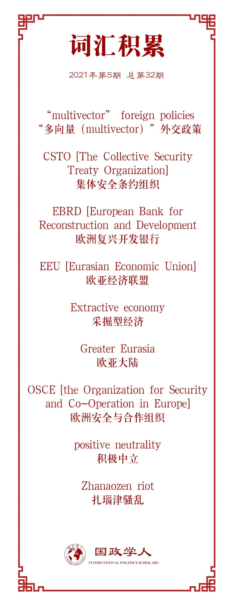

收录于合集

作品简介
【作者】 安德烈·卡赞采夫（Andrei Kazantsev），俄罗斯莫斯科国立高等经济大学，世界经济与国际事务学院，政治地理与当代地缘政治实验室助理研究员；
斯维特拉娜·梅德韦杰娃（Svetlana Medvedeva），俄罗斯莫斯科国立国际关系学院（MGIMO）讲师；
伊万·萨弗兰克（Ivan Safranchuk），俄罗斯莫斯科国立国际关系学院（MGIMO）博士研究生。
【编译】 邵良（国政学人编译员，中国人民大学硕士毕业生）
【校对】 王芷汀
【审核】 黄慧彬
【排版】 黄晨蕊
【美编 】臧泽华
【来源】 Kazantsev, A., Medvedeva, S., & Safranchuk, I. (2021). Between Russia and China: Central Asia in Greater Eurasia. Journal of Eurasian Studie s, 12 (1), 57–71. https://doi.org/10.1177/1879366521998242
【归档】 《国际关系前沿》2021年第5期，总第32期。
期刊简介
《欧亚研究杂志》（ Journal of Eurasian Studies ）是由韩国汉阳大学亚太研究中心出版的区域研究杂志。该杂志还邀请作者采用跨学科或人文学科的方法寻求对欧亚空间的重新认识。
**中俄之间：欧亚大陆的中亚国家 ******
Between Russia and China:
Central Asia in Greater Eurasia
内容提要
本文认为，作为积极的行为体，中亚国家基于其自身的利益和立场，形塑了中亚一体化进程。所有中亚国家都采取所谓的“多向量（multivector）”外交政策，平衡与主要大国（俄罗斯、中国和西方国家）以及中东和南亚国家的关系。从中亚国家的角度出发，大欧亚大陆的理想模式应该包括整个大陆。然而，作者认为，在当前的世界地缘政治形势下，中亚国家实行一体化的唯一可行选择就是与中俄两国进行一体化。具体来说，包括但不限于在集体安全条约组织（The Collective Security Treaty Organization, CSTO）内与俄罗斯的政治和军事一体化、在欧亚经济联盟（The Eurasian Economic Union, EAEU）内与俄罗斯的经济一体化，以及依托上合组织框架（Shanghai Cooperation Organization, SCO）塑造地区安全体系、借助“一带一路”倡议（Belt and Road Initiative，BRI）以及该倡议与欧亚经济联盟的合作协议构建包括俄罗斯、中国和中亚国家在内的大欧亚经济圈。然而，在中亚国家之间，以及中俄之间，要推进欧亚一体化，仍然面临许多实际问题，并且没有任何迹象表明这些问题可以在不远的将来得到解决。
【关键词】 中亚；中亚国家的“多向量”外交政策；俄罗斯和中国在中亚
文章导读
01
中亚各国的内外概况
尽管新冠危机正在改变目前的中亚局势，但是由于其对中亚各国与中俄两国关系的影响尚不明朗，本文将主要讨论新冠危机前的各种影响因素。此外，虽然目前中亚国家正在以各种形式积极发展与西方国家的关系以平衡中俄日益增长的影响力，但是这些超出了本文的研究范围，故不再赘述。
为了明确中俄两国对中亚各国的利害关系，本文根据2019-2020年间对相关国家专家的半结构访谈，对中亚各国内政外交概况总结如下：
哈萨克斯坦：与中亚其他国家相比，具备相对强劲的采掘型经济（extractive economy），面向中国和欧盟出口自然资源；实行开放政治，与全球事务中所有可能的伙伴互动，鼓励外国投资；启动大量一体化项目，积极参与多边组织；积极配合俄罗斯的一体化项目；积极开展对华政治经济合作；与西方国家的互动部分抵消了俄罗斯和中国的影响；零星爆发反华群众运动（如2011年扎瑙津骚乱、2016年“土地暴动”等）；北部地区与俄罗斯存在潜在领土争议。
乌兹别克斯坦：因为其众多的人口和相对强大的军队所带来的影响力，该国在中亚地区处于区域中心地位；传统上对俄罗斯一体化项目持谨慎态度；长期以来，相比多边关系更重视双边关系；米尔齐约耶夫总统成功解决了与邻国的严重冲突；将加强区域关系作为一个关键优先事项；米尔齐约耶夫实行的开放经济政策加强了与主要合作伙伴的商业联系，这与卡里莫夫统治时期有着明显的区别。
吉尔吉斯斯坦：内部不稳定、领土分裂、政府机构薄弱，该地区最民主国家的地位正在消失；康德设立有俄罗斯军事设施以及俄罗斯通过集体安全条约组织在提供国家安全方面中扮演特殊角色；经济疲软，依赖进出口贸易；中国投资的作用日益增强；坚实的俄罗斯经济支持，参与俄罗斯一体化项目。
塔吉克斯坦：设立有俄罗斯的军事基地，内战后俄罗斯在提供政权稳定和国家安全方面扮演重要角色；对向俄罗斯输出劳动力的经济依赖；中国经济和政治影响力不断增强；印度和巴基斯坦（作为中国盟友）对该国的战略利益（就印度而言，印度有意租赁艾尼空军基地）具有一定影响；与阿富汗接壤的边界长、保护不力，经常发生跨界威胁，必须与俄罗斯或中国合作以抵御这种威胁；伊朗文化的影响、伊朗和沙特阿拉伯在“软实力”领域的竞争日益激烈。
土库曼斯坦：“积极中立”的立场，不参与任何一体化项目；天然气领域的多元政策，愿意与任何有意购买天然气的伙伴合作；政治和经济上的孤立主义；对中国天然气投资者和消费者的经济依赖；与阿富汗接壤的边界长、保护不力，经常发生跨界威胁；对讲俄语的少数民族的压迫政策，这在2020年的危机期间再次变得明显（关闭首都的俄语学校等）。
综上，俄罗斯目前的影响力在吉尔吉斯斯坦非常高；在塔吉克斯坦和哈萨克斯坦较高；在乌兹别克斯坦中等（尽管在增长）；在土库曼斯坦很低。中国目前在塔吉克斯坦、土库曼斯坦和吉尔吉斯斯坦的影响力非常高；在哈萨克斯坦较高；在乌兹别克斯坦针对不同问题有从中到高不等的影响力。
02
中亚国家与俄罗斯的合作与一体化
中亚国家与俄罗斯和中国的合作是由多重外交政策构成的。在中亚地区，俄罗斯和中国之间存在一个非官方的分工：前者在传统意义上是中亚地区的安全霸主，而后者则日益成为该地区的经济主导者。俄罗斯通过集体安全条约组织这一军事和政治组织影响中亚各国。五个中亚国家中有三个是集体安全条约组织成员国，享有俄罗斯的安全保障。虽然和中国相比一年不如一年，俄罗斯对中亚国家的经济仍保持着稳固的影响力。俄罗斯通过欧亚经济一体化项目影响中亚各国的经济。自苏联解体以来，俄罗斯一直以补贴价格向吉尔吉斯斯坦和塔吉克斯坦出口石油化工产品、燃料和润滑油，这基本上构成了隐性经济援助。这是俄罗斯出口到这些国家的最大商品。涌入俄罗斯的大量劳动力移民是俄罗斯对吉尔吉斯斯坦、塔吉克斯坦和乌兹别克斯坦经济影响的关键因素。欧亚经济联盟（Eurasian Economic Union）的成员资格有利于经济疲软的吉尔吉斯斯坦，并通过俄- 吉贸易提升了俄罗斯的国内就业率。与中亚各国的贸易也使俄罗斯能够部分消除西方制裁的负面影响。
03
中亚国家与俄罗斯一体化的若干问题
首先，集体安全条约组织和欧亚经济联盟成员国与俄罗斯之间存在地缘政治分歧，表现之一就是它们都不承认俄罗斯对克里米亚和阿布哈兹的吞并以及南奥塞梯脱离格鲁吉亚的独立。此外，在顿巴斯与乌克兰当局作战的人们在哈萨克斯坦受到刑事起诉。阿布哈兹政府表示有兴趣加入欧亚经济联盟，但白俄罗斯、亚美尼亚、哈萨克斯坦和吉尔吉斯斯坦反对其加入，因为它们坚持格鲁吉亚领土完整的原则。在顿巴斯冲突爆发后，作为欧亚经济联盟和集体安全条约组织成员的中亚国家也不想减少与北约、美国或欧盟的接触。中亚国家对集体安全条约组织本身也心怀不满。
其次，欧亚经济联盟的核心理念与中亚国家的国家经济战略（及其加入世界贸易组织的条件）之间存在矛盾。例如，自与俄罗斯建立共同市场以来，哈萨克斯坦注意到，将欧亚经济联盟视为通过高关税与世界其他地区隔离的经济空间的概念（普京总统前经济顾问谢尔盖·格拉兹耶夫提出的欧洲经济联盟方案）与哈萨克斯坦的国家经济战略存在矛盾。与其他欧亚经济联盟国家相比，哈萨克斯坦的经济改革走得最远。其人均投资指标在欧亚经济联盟国家中最高，经济自由化程度相对较高。因此，在经济政策方面，哈萨克斯坦坚决反对欧亚经济联盟制定共同产业政策的企图。此外，欧亚经济联盟的规则与哈萨克斯坦的世界贸易组织（WTO）义务相抵触（哈萨克斯坦在2015年发起欧亚经济联盟的同时加入了WTO）。这种抵触也成为困扰吉尔吉斯斯坦和乌兹别克斯坦的问题。
第三，欧亚经济联盟内部存在经济和政治一体化的分歧。哈萨克斯坦一直强调，欧亚经济联盟纯粹是经济组织，应尽量减少该组织活动的政治和地缘政治组成部分。在欧亚经济联盟机构中，哈萨克斯坦一直避免俄罗斯将政治问题提上议事日程。在哈萨克斯坦大众媒体中非常流行的一种观点是，欧亚经济联盟具有严格的地缘政治性质；其目标是通过确认俄罗斯是后苏联空间的领导者来恢复俄罗斯在苏联解体后失去的大国地位。有专家认为，对俄罗斯来说，欧亚经济联盟是地缘政治的，而不是经济的。俄罗斯推行欧亚经济联盟项目的目标是在后苏联空间创建一个“特定的单一协调政治领域”，进而直接或间接损害哈萨克斯坦的经济和政治利益。乌兹别克斯坦和塔吉克斯坦也有类似看法。
此外，西方国家的制裁、卢布贬值以及俄罗斯和西方国家对抗加剧的负面经济影响正在向俄罗斯的欧亚经济联盟伙伴国家扩散。为保护因卢布贬值以及制裁和反制裁的其他负面后果而蒙受损失的当地制造商，欧亚经济联盟成员国的行政当局对货物进口实行了多项禁令。例如，哈萨克斯坦政府决定禁止使用俄罗斯火车运输粮食，并限制俄罗斯石油化工产品的进口。西方国家和俄罗斯之间的制裁和反制裁的政治分歧也使局势恶化。莫斯科对欧亚经济联盟成员国不满，要求其停止试图绕过俄罗斯对从欧盟和乌克兰进口食品的禁令。哈萨克斯坦则指责俄罗斯在未与合作伙伴事先磋商的情况下实施单方面禁运，违反了《欧亚经济联盟条约》。
最后，俄罗斯、哈萨克斯坦、中国、欧盟四边关系的发展也带来了一系列问题。中国的“一带一路”倡议旨在通过中亚进入欧洲市场。然而，由于与欧盟和北约的冲突，俄罗斯正试图将其许多项目转向东方。因此，俄欧关系中尚未解决的问题阻碍了“一带一路”倡议在中亚地区的发展。
04
中亚国家与中国的合作与一体化
上世纪90年代以来，中亚各国对中国维护新疆的政治稳定至关重要。为了实现这一目标，中国正在实施西部大开发战略的第二阶段（2011-2030年），该阶段计划预计将持续到2050年。此外，中国还启动了“一带一路”倡议，进一步增强了中国与中亚国家合作的战略性质。中国和中亚各国的进出口贸易中，中国出口的商品主要是制成品，进口的商品主要是燃料、金属和农业原材料。中国政府还在与中亚的进出口贸易中积极推进人民币交易。为了生产和运输大量的石油和天然气，中国建立了中亚- 中国天然气管道系统。
随着中国在新疆打击“三股势力”运动的深入开展，一些专家认为，中国已经放弃了避免以反恐为由在国外使用军队的传统政策。2016年夏天，中国、塔吉克斯坦、阿富汗三军总参谋长以及巴基斯坦地面部队司令在乌鲁木齐举行会议。他们就共同打击恐怖主义和极端主义建立了磋商机制。这个组织可能是俄罗斯主导的集体安全条约组织的潜在对手。
05
中亚国家对华关系中存在的问题
中亚国家对中国介入中亚事务所带来的依赖性陷阱相当敏感。有专家指出，中亚各国普遍担心中国可能将中亚国家变成自己的仆从国。因此，中亚各国民间舆论往往将中国在中亚实施的“一带一路”倡议视为其“建立地区和全球霸权计划的一部分”。此外，基于劳资冲突、新疆民族政策、领土争端、商业贿赂等各种各样原因的反华社会运动也不时在中亚各国爆发。吉尔吉斯斯坦突厥斯坦伊斯兰党（Turkestan Islamic Party , TIP）针对中国的恐怖袭击以及土库曼斯坦与中国之间的债务危机等问题也比较麻烦。
06
中俄两国对中亚各方面影响的相互作用
俄罗斯和中国在该地区不同层面间的影响力，特别是军事和经济影响力之间的相互作用，是一个复杂的问题，目前还没有一个普遍接受的理论模型。幸运的是，中亚有一个案例可以为这个问题提供答案。
塔吉克斯坦被认为是中亚地区最依赖俄罗斯的国家。然而，塔吉克斯坦是欧亚经济共同体解体时唯一没有加入欧亚经济联盟的成员国。许多中亚和俄罗斯专家认为，中国日益增长的影响力是塔吉克斯坦政府没有选择加入欧亚经济联盟的一个关键因素。塔吉克斯坦不希望欧亚经济联盟阻碍该国和中国之间的经济联系。在这一案例中，中国对中亚的经济影响力正变得比俄罗斯的军事影响力更重要。与中国对塔吉克斯坦的投资相比，俄罗斯大公司投资塔吉克斯坦的项目大多没有成功。许多专家认为，与中国公司相比，俄罗斯公司不受塔吉克政府的青睐。在这种情况下，俄罗斯无法将其军事影响力转变为经济影响力，而中国正在成功地通过安全磋商机制将经济影响力转变为安全领域的影响力。
尽管中国在中亚地区的经济作用正在增强，但它仍然不是中亚地区的经济霸主。俄罗斯在中亚经济体和移民汇款方面仍然有着稳固的地位，欧盟也仍然发挥着重要作用。哈萨克斯坦和乌兹别克斯坦也有自己有效的经济发展方案。因此，这些因素仍然抵消了中国的影响。
07
结论
俄罗斯和中国在中亚国家的经济和政治生活中发挥着巨大的作用。中亚国家将通过发展与西方国家、伊斯兰世界国家和南亚的关系，更加积极地平衡俄罗斯和中国的影响。另外，中亚内部一体化是一种有前景的形式。
在认识到中亚国家不准备为了莫斯科的地缘政治利益而损害自己的利益的前提下（这在俄西对抗的背景下尤其重要），俄罗斯将能够更有效地与中亚国家进行互动。对中国来说，改变中亚各国人民的历史观，正成为中国与中亚国家关系的一个关键因素。防止区域投资项目中的腐败因素也很重要。中国还必须在实施其投资项目时对社会和环境更加负责，与当地政府和非政府组织合作。
译者评述
随着苏联解体以来俄国的衰落，其对中亚国家的政治影响力大打折扣，表现之一就是本文所提到的中亚各国已经不愿意做俄国与西方地缘政治对抗中的马前卒。然而，本文也提到，随着中国综合国力的崛起，中国对中亚各国的影响力有了全方位多角度的提升。具体来说，就是维度上由单维度的经济影响力上升为政治、经济、军事、文化多维度的影响力，数量上逐步逆转中俄两国在中亚的经济投资与军事存在比例。那么，这些变化是否会转变为中俄两国在地缘政治上的激烈斗争呢？译者认为，基于本文所提供的信息以及国际关系史的相关内容，在可见的将来，中俄两国在中亚地区的地缘政治博弈必然会越演越烈，甚至可能促使俄罗斯走向对抗中国的前线。其原因如下：
首先，俄罗斯向南寻找出海口的战略传统、为了民族安全而追求领土扩张的民族心理、重现苏联荣光的大国情结以及位于欧亚大陆“心脏地带”的中亚各国的地缘政治重要性，都使得俄罗斯不愿自行放弃其在中亚各国已有的各方面影响力。
另外，中国国内政治上的反恐维稳，经济上的自然资源进口、商品出口，全球大国博弈中的“一带一路”倡议，都使得中国不得不扩大其在中亚各国全方位的影响力。
然而，根据本文所述，中国在中亚各国影响力的扩大，已经在很多方面抵消了俄国在中亚的影响力。例如许多中亚和俄罗斯专家指出，中国在塔吉克斯坦日益增长的影响力使得该国政府没有选择加入俄罗斯主导的欧亚经济联盟，因为该国政府不希望欧亚经济联盟阻碍其与中国之间的经济联系。此案例表明，中国对中亚影响力的提升已经开始侵蚀俄罗斯对中亚国家自苏联解体以来传统上的军事影响力。
随着时间推移，中俄两国此消彼长的实力变化必然使得上述中国对俄国在中亚影响力的抵消的范围和比例日益扩大。例如，在可见的将来，中国为了应对大国竞争，一定会将国内经济发展所带来的社会财富中的相当比例用于提升军事装备发展，加快军事装备的升级换代。另外，俄罗斯的国力在西方国家的长期制裁下进一步下滑，这使得普京当局客观上难以做到维持政权合法性的同时保持国内军事装备相对中国的领先优势。这样一来，俄国凭借苏联时代积攒下来的军事装备优势所换来的在中亚的军事影响力将会被中国抵消殆尽。
综上，在可见的将来，中国将会变得既有意愿又有能力取代俄罗斯在中亚各国的影响力，而俄罗斯却将很有可能一步一步丧失自己必争之地控制权。这种情况下，俄罗斯必然会采取相应措施，对中国的国力增长及其国际影响力的提升进行全方位的打压遏制。
那么俄罗斯将会采取怎样的措施实现其遏制中国的地缘政治诉求呢？由于俄罗斯需要在西方国家的制裁之下获取喘息之机，俄罗斯尚须中国的各项援助来输血续命，不能把中俄关系搞坏。因此，俄罗斯必然要发动其基于苏共和新中国执政党历史上的亲缘关系所发展起来的在华间谍网络，开展各种旨在遏制中国国力发展、破坏打击中国国际形象的间谍活动，以图在避免中俄关系恶化的前提下，实现其打压遏制中国的战略目的。而从逻辑上看，想要在遏制打压中国的国力和国际形象的同时，避免引起反间谍部门的关注、避免被查出和俄罗斯之间关系进而导致中俄关系恶化，只能从中国自身的社会结构、政治文化、历史传统以及其他方面的固有特质中寻找有利于遏制中国国力发展、打击破坏中国国际影响力的因素，然后在俄国在华间谍网络团队的配合之下将其无限放大，直至实现其遏制中国国力、打击破坏中国国际影响力的战略目标。
总之，本评论给国内有关部门敲响了警钟：在无政府状态下残酷的国际斗争中，“最信任”的国家也很可能同时伤你最深。
参考文献
[1] 罗伯特· A ·帕斯特编，胡利平、杨韵琴译：《世纪之旅——七大国百年外交风云》，上海：世纪出版集团，2001 年。
[2] 吴征宇：《地理政治学与大战略》，北京：中国法制出版社，2012年。
[3] George F. Kennan. “The Sources of Soviet Conduct.” Foreign Affairs 25 , no. 4 (1947): 566-582.
[4] Nicklas Norling. “China’s Role in Central Asia: Soft and Hard Power.’’ Global Dialogue , Volume 9, no.1-2, Winter/Spring, 2007.
词汇整理

文章观点不代表本平台观点，本平台评译分享的文章均出于专业学习之用, 不以任何盈利为目的，内容主要呈现对原文的介绍，原文内容请通过各高校购买的数据库自行下载。
好好学习，天天“在看”
国政学人
支持学术公益与知识传播
微信扫一扫赞赏作者 __赞赏
已喜欢，对作者说句悄悄话
取消 __
发送给作者
发送
最多40字，当前共字
上一页 1/3 下一页
长按二维码向我转账
支持学术公益与知识传播
受苹果公司新规定影响，微信 iOS 版的赞赏功能被关闭，可通过二维码转账支持公众号。